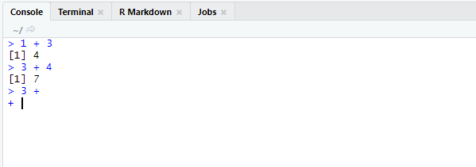
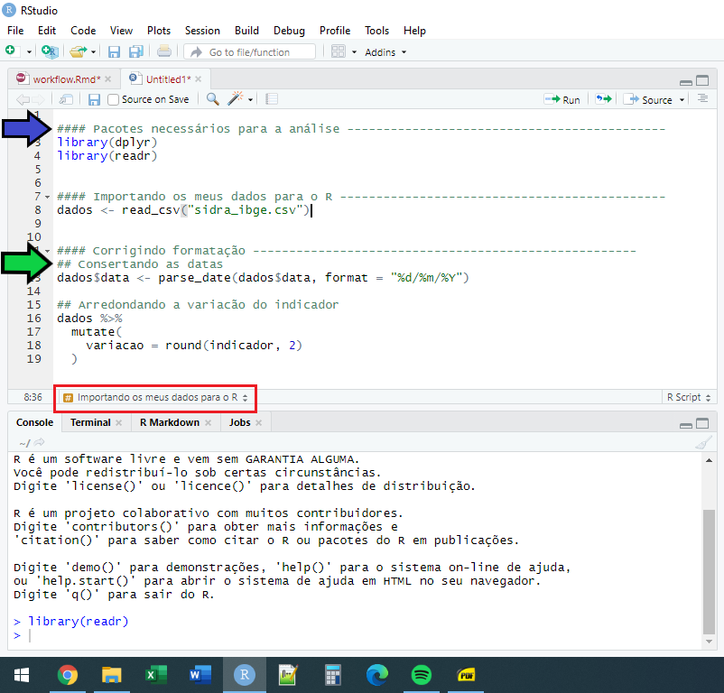

1 Noções Básicas do R
1.1 Uma descrição do R
1.1.1 História do R
A linguagem R nasceu durante a década de 90, inicialmente, como um projeto de pesquisa de Ross Ihaka e Robert Gentleman. Ambos estatísticos e pesquisadores da Universidade de Auckland (IHAKA; GENTLEMAN, 1996). Porém, as origens da linguagem R retornam até a década de 70, com o desenvolvimento da linguagem S, em um dos mais importantes laboratórios de pesquisa do mundo, a Bell Labs (PENG, 2015).
Como foi descrito por IHAKA; GENTLEMAN (1996), a linguagem R foi desenvolvida com fortes influências das linguagens S e Scheme. A própria sintaxe da linguagem R, se assemelha muito a da linguagem S. Por isso, muitos autores como PENG (2015) e CHAMBERS (2008), caracterizam a linguagem R como um “dialeto da linguagem S”. Segundo IHAKA; GENTLEMAN (1996) a linguagem S representava uma forma concisa de se expressar ideias e operações estatísticas para um computador e, por isso, foi uma fonte de inspiração importante para o R. Em outras palavras, comparado às demais linguagens, a linguagem S oferecia uma sintaxe mais atrativa e confortável para estatísticos executarem as suas ideias, e grande parte dessa sintaxe, foi transportada para o R.
1.1.2 O que é o R?
R é um software estatístico que oferece um ambiente para análise interativa de dados, e que conta com uma poderosa linguagem de programação, e é dessa linguagem que vamos tratar neste livro. Diferente de outras linguagens como C e C++, que são linguagens compiladas, a linguagem R é uma linguagem interpretada. Isso significa, que para trabalharmos no R, vamos estar constantemente escrevendo e enviando comandos para o Console do programa. Esse Console vai avaliar os comandos que enviarmos (segundo as “regras gramaticais” da linguagem R), antes de executá-los.
Portanto, o console é o coração do R. É a parte mais importante do programa (ADLER, 2010, p. pp.11). Pois é nele que se encontra o interpretador que vai avaliar e executar todos os nossos comandos. O processo de análise de dados adquire um aspecto interativo no R. Ou seja, temos uma sensação de que estamos construindo (interativamente) uma conversa com o console. Você envia um comando para o console; o comando é avaliado pelo console e é executado; o resultado desse comando é retornado pelo console; você olha para o resultado, e se pergunta se este resultado satisfaz os seus desejos; caso não, você faz ajustes em seu comando (ou utiliza um comando completamente diferente), e o envia novamente para o console; e assim, todo o ciclo recomeça.
1.1.3 O sistema e universo do R
O universo do R pode ser divido em duas partes, sendo elas:
Quando você instala o R na sua máquina, ele vem acompanhado por uma coleção de pacotes que compõe a base da linguagem. Esse é o sistema “básico” do R. Esses pacotes são comumente chamados pela comunidade, por
base R. Pois o principal pacote deste sistema se chamabase.Todo o resto, isto é, todos os pacotes externos a este sistema “básico”, são os pacotes desenvolvidos pela comunidade do R. A grande maioria desses pacotes estão disponíveis para você através do Comprehensive R Archive Network (CRAN R), mas alguns outros, estão presentes apenas em outras plataformas, como o GitHub.
Todas as funcionalidades e operações disponíveis no R são executadas através de funções. Essas várias funções existentes são organizadas em “pacotes”. Portanto, um pacote representa uma coleção de funções, datasets, documentações, e outros componentes que te ajudam a desempenhar uma tarefa/operação específica dentro do R.
O sistema “básico” do R é um conjunto de pacotes que oferecem as funcionalidades básicas da linguagem. Exemplos desses pacotes são base (fornece funções de uso geral) e stats (fornece funções para análises e operações estatísticas). Caso você precise de uma funcionalidade que não está disponível dentro deste conjunto de “pacotes básicos”, é neste momento em que você precisa instalar outros pacotes que estão fora desse sistema “básico”. Vamos dissecar alguns desses pacotes “externos” ao longo deste livro, com especial atenção ao tidyverse1.
Pelo fato do R ser gratuito e open source, várias pessoas estão constantemente desenvolvendo novos pacotes, e efetivamente expandindo cada vez mais o universo da linguagem R. Ou seja, se você quer resolver um problema, é muito provável que alguém já tenha enfrentado esse mesmo problema antes, ou algo próximo, e que tenha desenvolvido um pacote que oferece funções para resolver esse problema. Logo, você pode se aproveitar do trabalho de outras pessoas, que passaram pelas mesmas dificuldades que você, para resolver os seus próprios problemas.
1.1.4 RStudio
RStudio é um Ambiente de Desenvolvimento Integrado (Integrated Development Environment - IDE, em inglês) para o R. Em síntese, esse programa oferece um ambiente com diversas melhorias, atalhos e ferramentas que facilitam o seu trabalho com o R. Por exemplo, o programa oferece menus rápidos para importação e exportação de arquivos, além de diversos atalhos de teclado muito úteis. Sendo, portanto, uma ferramenta muito recomendada para qualquer usuário que venha a trabalhar com a linguagem R (GILLESPIE; LOVELACE, 2017). Para encontrar mais detalhes sobre o programa, você pode consultar o site oficial do RStudio2.
A partir daqui, vamos focar bastante no uso do R através do RStudio. Portanto, vamos estar constantemente descrevendo atalhos de teclado, opções e telas dentro do RStudio ao longo dos próximos capítulos. Na Figura 1.1 temos um print que mostra os diferentes painéis que existem dentro do RStudio.
1.2 Introdução ao R e RStudio: noções básicas
1.2.1 Executando comandos: Console
Você trabalha no R através de sua linguagem de programação. Para realizar qualquer tarefa (e.g. importa os seus dados, remove ou acrescenta colunas, reordena a sua base de dados, constrói gráficos, e estima os seus parâmetros) no R você precisa enviar comandos para o Console. O trabalho do Console (e principalmente do interpretador que está incrustrado dentro dele), é o de traduzir os seus comandos escritos na linguagem R (que nós seres humanos conseguimos entender), para uma linguagem que o seu computador possa entender.
Como mostrado na Figura 1.1, o Console no RStudio está sempre localizado na parte inferior esquerda de sua tela. Ao olhar para o Console, você pode perceber que em sua parte inferior, nós temos no início da linha um símbolo de “maior que” (>). Esse símbolo, significa que o Console está pronto e esperando por novos comandos a serem executados. Ou seja, você coloca os seus comandos à frente deste símbolo, e em seguida, você aperta Enter para confirmar o envio dos comandos. Assim, os comandos serão avaliados, e o console vai lhe retornar o resultado destes comandos. Existem algumas ocasiões em que o console vai apenas executar os comandos, e não irá lhe mostrar automaticamente o resultado. Isso geralmente ocorre quando você está salvando os resultados desses comandos em um objeto (vamos falar deles mais a frente).
Como um exemplo clássico, eu posso utilizar o R como uma simples calculadora, ao escrever o comando “1 + 3” no Console (e apertar a tecla Enter), e como não estou salvando o resultado dessa soma em algum objeto, o console me mostra automaticamente o resultado dessa operação.
1 + 3[1] 4Vale destacar, que todo comando que você escrever no Console, deve estar completo para ser avaliado. Dito de outra forma, quando você escreve no Console, algum comando que ainda está incompleto de alguma forma (por exemplo, que ainda está faltando fechar algum par de parênteses, ou está faltando uma vírgula, ou está faltando algum valor a ser fornecido), e você aperta Enter para ele ser avaliado, o símbolo > do Console, será substituído por um +, te indicando que ainda falta algo em sua expressão. Neste caso, o Console ficará esperando até que você escreva o restante do comando, como mostrado na Figura 1.2. Se você se sentir preso nesta situação, não se preocupe! Você pode abortar a operação, e reescrever do início o seu comando, ao apertar a tecla Esc.

1.2.2 Comentários
O R possui diversos caracteres especiais, e que geram efeitos distintos ao serem avaliados. Um desses caracteres, é o hash, ou o “jogo da velha” (#), que no R, representa o início de um comentário. Ou seja, todo e qualquer comando, letra ou expressão escrita após o símbolo # (incluindo o próprio símbolo #), será completamente ignorado pelo Console. Portanto, o símbolo # constitui uma forma útil de incluirmos anotações e comentários em nossos comandos. Por exemplo, você talvez tenha dificuldade de lembrar o que cada função faz, e por isso, você pode utilizar o símbolo # para inserir pequenas descrições e lembretes ao longo de seus comandos, para relembrá-lo o que cada função faz. Veja o exemplo abaixo:
# A função sum() serve para somar um
# conjunto de números.
sum(1,2,3,4,5)[1] 151.2.3 Comandos e resultados
O símbolo de “maior que” (>) no Console, também é uma forma útil de você diferenciar o que é um comando a ser interpretado pelo R, e o que foi retornado pelo R como o resultado desse comando. Ou seja, todo bloco de texto em seu Console, que estiver logo à direita do símbolo >, representa um bloco de comandos a serem avaliados (ou que já foram avaliados) pelo R. Em contrapartida, todo texto que não possuir o símbolo > à sua esquerda, representa o resultado do comando anterior, ou então, uma mensagem de erro referente a esse comando anterior.
Uma outra forma útil de identificar os resultados de seus comandos, é perceber que eles sempre vêm acompanhados por algum índice numérico no início de cada linha. Esse índice pode estar dentro de um par de colchetes (como [1]), ou pode estar livre, como no resultado da função data.frame() apresentado na Figura 1.3. Perceba que esses números são apenas índices, logo, eles não fazem parte do resultado de seus comandos, e são apenas valores que marcam o início de cada linha de seu resultado.

1.2.4 Histórico de comandos
O Console possui uma memória dos comandos que você executou anteriormente. Tanto que esses comandos e seus resultados, permanecem visíveis ao navegarmos pelo Console. Porém, quando você estiver dentro do Console, você também pode navegar pelos comandos previamente executados, ao utilizar a seta para cima (\(\uparrow\)) de seu teclado. Através dessa tecla, os comandos executados anteriormente são apresentados na linha de inserção de códigos do próprio Console.
Porém, você também pode visualizar de forma mais eficiente o seu histórico de comandos, ao acessar a janela History, que fica dentro do painel de Environment no RStudio. Este painel fica na parte superior direita de sua tela, como mostrado na Figura 1.1. Uma outra forma de abrirmos essa janela, está na função history(), que lhe permite determinar até quantos comandos anteriores devem ser exibidos nessa janela.
# Exibir os últimos 10 comandos executados
history(10)Para mais, você também pode visualizar esse histórico de comandos, por meio de uma pequena janela aberta em seu Console, mostrado na Figura 1.4. Quando estiver no console, você pode acessar essa janela, ao pressionar as teclas Ctrl + \(\uparrow\).

1.2.5 Operações matemáticas básicas
O R pode ser utilizado como uma simples calculadora, através de seus operadores aritméticos.
# Simples Adição
3 + 15[1] 18# Multiplicação
3 * 125[1] 375# Potenciação
3 ^ 4[1] 81# Miscelânia de operadores
((4.505 * 100)/ 5) + 0.015 [1] 90.115Você irá rapidamente perceber que esses operadores são extremamente úteis e estão por toda parte, sendo utilizados em diversas outras operações muito mais complexas. Por isso, é importante que você leve um tempo se familiarizando com esses operadores. Temos na Figura 1.5, uma lista dos principais operadores aritméticos, além de alguns comandos no R que exemplificam o seu uso.

1.3 Introdução a objetos
Uma das principais características do R, é que ele é uma linguagem orientada a objetos (object oriented)3. Objetos são o método que o R possui para armazenar os valores, funções e resultados que você produz. Como foi posto por ADLER (2010, p. 50), todo comando/código que você escreve no R, busca utilizar, manipular ou modificar de alguma forma, um objeto do R. Logo, quando você estiver trabalhando com seus dados no R, você estará constantemente aplicando operações e transformações sobre os objetos onde seus dados estão guardados, de uma forma interativa e dinâmica.
Para que um objeto seja criado, o R necessita de uma forma de referenciar aquele objeto, ou em outras palavras, uma forma de reconhecer o objeto ao qual você está requisitando. Esse mecanismo é simplesmente um nome (CHAMBERS, 2008, p. pp.24). Ou seja, todo objeto no R, possui um nome, e será através desse nome, que você será capaz de acessar e usar esse objeto. Portanto, para você salvar todo e qualquer resultado ou valor no R, você precisa obrigatoriamente salvá-lo dentro de um objeto, isto é, dar um nome a esse resultado ou valor que você está gerando.
No exemplo abaixo, eu estou guardando a minha idade em um objeto chamado idade_pedro. Dessa forma, quando eu precisar deste número em algum momento de minha análise, eu preciso apenas chamar pelo nome onde guardei este número, ou nos termos do R, pelo nome dei ao objeto onde guardei este número.
idade_pedro <- 22Após criarmos o objeto de nome idade_pedro, eu posso acessar o valor que foi salvo nele, ao chamar pelo nome do objeto no Console.
idade_pedro[1] 22Sempre que você estiver criando um objeto, ele irá seguir essa estrutura acima. Você possui primeiro o nome do objeto, depois o símbolo de assignment (<-), e por último, o valor (ou o conjunto de valores) que você deseja guardar dentro deste objeto. Não importa o quê o código à direita do símbolo de assignment faz. Assim que você ver essa estrutura em algum comando, você pode ter certeza que esse comando está criando um objeto.

Você pode sobrepor (ou substituir) o valor guardado em um objeto, ao atribuir um novo valor para este objeto. Neste caso, estaríamos perdendo o valor que salvamos anteriormente neste objeto. Como exemplo, se eu atribuir o texto “Importado” ao objeto idade_pedro. Após este novo comando, se chamarmos pelo nome do objeto novamente, o R irá lhe mostrar o novo texto que acabamos de guardar neste objeto. Portanto, o número 22 que estava anteriormente guardado nele, se perdeu.
idade_pedro <- "Importado"
idade_pedro[1] "Importado"Caso você tenha que sobrepor o valor de algum objeto, mas, ao mesmo tempo, você não quer perder o valor que está salvo nele, você deve conectar este valor a um novo objeto. Se um valor não está conectado a um nome, o R vai automaticamente descartar este valor, por isso, precisamos criar uma nova conexão até este valor, ou em outras palavras, precisamos conectá-lo a um novo nome. Dessa forma, podemos tranquilamente sobrepor o valor guardado em idade_pedro, pois agora, o valor 22 está guardado em um outro objeto.
idade_pedro <- 22
numero_importante <- idade_pedro
idade_pedro <- "Importado"
# Ao chamar pelo nome de
# ambos os objetos, temos dois valores
# diferentes
idade_pedro[1] "Importado"numero_importante[1] 221.3.1 Como nomear um objeto
Como foi destacado por WICKHAM; GROLEMUND (2017), existem regras sobre como você pode nomear os seus objetos no R. Segundo TEAM (2020a, p. 4), o nome de um objeto, pode conter qualquer símbolo alfanumérico (qualquer letra ou número), inclusive letras acentuadas. Contudo, o nome do objeto deve obrigatoriamente se iniciar por uma letra, ou por um ponto (.), como por exemplo, os nomes: População; dados.2007; .abc; media_1990.
Sendo assim, um nome não pode começar por um número. Um nome como 1995populacao, não é permitido! Também não é possível criar um nome que se inicie por um ponto (.) caso ele seja seguido por um número. Logo, você não pode criar um objeto com o nome .2media. Mas você pode sim criar um objeto que possua os nomes .m2edia e .media2.
Em suma, o nome de um objeto pode conter os seguintes tipos de caractere:
- Letras.
- Números.
_(underline)..(ponto).
Além disso, o nome de um objeto pode se iniciar com:
- Letra.
.(ponto, desde que não seja seguido por um número).
Porém, o nome de qualquer objeto, não deve começar por um:
_(underline).- Número.
.(ponto) seguido de um número.
Pode ser difícil pensar em um nome para os seus objetos. Mas a melhor alternativa, é sempre dar um nome claro e descritivo aos seus objetos, mesmo que esse nome fique muito extenso. Por exemplo, microdados_pnad_2020 para uma base de dados contendo os microdados da PNAD de 2020; ou vetor_idade, para um vetor que contém as idades das pessoas que foram entrevistadas em uma pesquisa.
1.3.2 O R é case-sensitive
O R é uma linguagem case-sensitive. Isso significa, que ele é capaz de diferenciar a capitalização de sua escrita. Logo, um objeto chamado a, é um objeto completamente diferente de um objeto chamado A. Veja o exemplo abaixo.
casa <- 10 ^ 2
cAsa <- 2 + 2
casa[1] 100cAsa[1] 4Como visto, os objetos casa e cAsa contêm valores diferentes, e, portanto, representam objetos distintos.
1.3.3 Como utilizar objetos
Um objeto é de certa forma, uma referência até um certo conjunto de valores, e você utiliza, ou acessa essa referência, através do nome que você deu a esse objeto. Logo, sempre que você quiser utilizar os valores que estão guardados em algum objeto (seja dentro de alguma função ou em alguma operação específica), basta utilizar o nome que você deu a esse objeto.
Por exemplo, se eu quero somar um conjunto de valores guardados em um objeto chamado vec_num, eu posso fornecer o nome deste objeto à função sum(), como no exemplo abaixo:
vec_num <- c(2.5, 5.8, 10.1, 25.2, 4.4)
sum(vec_num)[1] 481.4 Funções (noções básicas)
Como destacado por CHAMBERS (2016), tudo no R são objetos! Inclusive as funções que você utiliza. Toda função no R é utilizada, seguindo o formato abaixo. Primeiro você escreve o nome dessa função, em seguida, você abre um par de parênteses, e dentro desse par de parênteses, você deve fornecer os argumentos (ou input’s) que serão utilizados pela função para gerar o resultado.
nome_da_função(lista_de_argumentos)Os operadores aritméticos utilizados até aqui (+, -, *, etc.) também são funções para o R, porém, eles representam um tipo especial de função. Pois nós podemos posicionar os seus argumentos, ao redor desses operadores. Por exemplo, na expressão 2 + 3, os argumentos (ou input’s) 2 e 3 são fornecidos ao redor do operador. Por outro lado, nós podemos escrever esses operadores (ou essas funções), da forma “tradicional”, como demonstramos acima. Perceba que pelo fato do nome da função (a função que representa o operador +) se iniciar por um símbolo (e isso não respeita as regras que definimos anteriormente em Seção 1.3.1), para nos referirmos a esse objeto, ou a essa função, nós precisamos contornar o nome dessa função por acentos graves.
# O mesmo que 2 + 3
`+`(2, 3)[1] 5# O mesmo que 12 + 8
`+`(12, 8)[1] 20Os argumentos de uma função representam os input’s dessa função. São informações ou dados que você precisa fornecer à função, para que ela possa produzir os resultados que você deseja obter. Portanto, os input’s que você fornece a uma função podem afetar diretamente o resultado que essa função produz para você. Em geral, os argumentos de uma função são fornecidos como uma lista de valores, separados por vírgulas. No exemplo abaixo, eu estou fornecendo dois input’s para a função.
exemplo_função(argumento1 = valor_argumento1, argumento2 = valor_argumento2)Um argumento pode ser um símbolo, que contém um valor específico (ex.: argumento1 = valor_argumento1). Uma função pode ter vários argumentos diferentes. Mas em muitos casos, você não é obrigado a fornecer um valor (ou um input) explícito para cada argumento. Pois muitos argumentos em certas funções possuem um “valor padrão”. Ou seja, se o usuário dessa função não fornecer um valor explícito para esse argumento, então, a função vai automaticamente usar o valor padrão para esse argumento.
Caso você não fornecer um valor explícito para um argumento que é obrigatório na função, ou seja, um argumento que precisa necessariamente de um valor explícito, o R vai emitir uma mensagem de erro no formato "argument ... is missing, with no default". No exemplo abaixo, eu dou um valor para o argumento x da função besselJ(). Contudo, eu não forneci um valor para o argumento nu, que é obrigatório nessa função. Por isso, o R levantou um erro me avisando que eu preciso também fornecer um valor para este argumento.
besselJ(x = 1)Error in besselJ(x = 1) : argument "nu" is missing, with no defaultPor outro lado, como comentamos, alguns argumentos já possuem um “valor padrão”, e por isso, não precisamos fornecer input’s para esses argumentos explicitamente. Um exemplo disso está na função sum(), que possui um argumento chamado na.rm. Através deste argumento, você pode determinar se os valores NA presentes em um objeto, devem ser ignorados ou não durante o cálculo da soma. Por padrão, esse argumento é configurado para FALSE (falso). Isso significa, que qualquer valor NA que estiver presente no objeto a ser somado, vai alterar o comportamento da soma executada por sum(). Por isso, se quisermos ignorar os valores NA durante o cálculo da soma, nós precisamos definir explicitamente o argumento na.rm para TRUE (verdadeiro), como no exemplo abaixo:
vec <- c(1.2, 2.5, 3, NA_real_, 7.6)
sum(vec)[1] NAsum(vec, na.rm = TRUE)[1] 14.3Você talvez tenha percebido que nem sempre eu defino explicitamente o nome do argumento ao fornecer um input a uma função. No exemplo anterior, dentro da função sum(), o input vec foi fornecido de forma livre. Eu não associei esse input de forma explícita a um argumento da função sum(). Nesse caso, o R vai automaticamente associar esse input à um dos argumentos de sum() com base na sua posição dentro da lista de input’s.
Ou seja, o primeiro input fornecido é automaticamente associado ao primeiro argumento da função. Já o segundo input, é associado ao segundo argumento. E assim por diante. Portanto, quando você usa a sintaxe valor_argumento, ao invés de usar a sintaxe nome_argumento = valor_argumento, os valores (ou input’s) que você forneceu vão ser automaticamente associados aos argumentos da função com base na posição que eles estão nesta lista de input’s.
Como um outro exemplo, veja a função rnorm() abaixo. O primeiro argumento (n) da função, define o número de observações a serem geradas; o segundo (mean), define a média desses valores; e o terceiro (sd), define o desvio padrão que esses valores vão seguir ao serem gerados. Logo, no exemplo abaixo, o input 6 é associado ao argumento n; o input 15 é associado ao argumento mean; e por último, o input 2.5 é associado ao argumento sd.
rnorm(6, 15, 2.5)Seguindo tudo o que aprendemos até aqui, nós podemos reescrever a expressão acima do modo exposto abaixo. Ou seja, a expressão exposta abaixo é semanticamente igual à expressão acima. Perceba que nesse caso, eu estou explicitamente associando cada input a um determinado argumento. Neste caso, o R não tem o trabalho de calcular a posição dos input’s na lista, e procurar pelo argumento que corresponde àquela posição da lista.
rnorm(n = 6, sd = 2.5, mean = 15)1.5 Erros e ajuda: como e onde obter
A partir do momento em que você começar a aplicar o conhecimento exposto neste livro, você vai rapidamente enfrentar situações adversas. Mensagens de erro, resultados incoerentes, etc. Nestes momentos, muitas perguntas vão surgir. Por isso, é muito importante que você conheça o máximo de recursos possíveis, dos quais você pode consultar e pedir por ajuda (WICKHAM; GROLEMUND, 2017).
Hoje, a comunidade internacional de R, é muito grande, e há diversos locais onde você pode encontrar ajuda, e aprender cada vez mais sobre a linguagem. Nessa seção, vamos explicar como utilizar os guias internos do R e do RStudio, além de algumas técnicas de pesquisa e de perguntas que podem te ajudar a responder as suas dúvidas.
1.5.1 Ajuda Interna do R: help() e ?
Toda função no R, possui uma documentação interna, que contém uma descrição completa (ou quase sempre completa) da função. Essas documentações são muitas vezes úteis, especialmente para descobrirmos os argumentos de uma função, ou para compreendermos que tipo de valores devemos utilizar em um certo argumento, ou então, em ocasiões mais específicas, para adquirirmos um conhecimento mais completo sobre o comportamento de uma função.
Para acessar essa documentação, você pode anteceder o nome da função com o operador ?, ou então, utilizar a função help() sobre o nome da função de interesse. Como exemplo, através dos comandos abaixo, você pode consultar a documentação interna da função mean().
# Usando `help()`
help("mean")
# Usando `?`
?meanAo executar esse tipo de comando dentro do RStudio, a documentação interna da função será exibida dentro da área de Help do RStudio. Esta área fica dentro do painel de Arquivos (exposto na Figura 1.1) que fica no canto inferior direito de sua tela.
1.5.2 Ajuda Externa: referências, documentação oficial e canais úteis
Apesar de útil, a documentação interna de uma função pode ser um pouco limitada, e muitas vezes está escrita em inglês, o que pode dificultar a compreensão do usuário. Por isso, é interessante se aprofundar e conhecer outras referências e materiais externos ao R, produzidas pela comunidade (livros, artigos, blogs, sites de ajuda, cursos online, etc).
Ao longo desse livro, vamos descrever diversas funções que provêm dos pacotes do tidyverse. Por isso, é interessante que você se familiarize com os sites desses pacotes4. Todos esses sites possuem uma página de “Reference”, que contém a documentação de todas as funções do pacote. Uma outra fonte rápida de informação, são as “colas” (ou “cheatsheets”) produzidas pela equipe do RStudio, chamadas de RStudio Cheatsheets5.
Temos também diversos livros-textos importantes sobre a linguagem, que oferecem diversos conhecimentos extremamente valiosos, como as obras de WICKHAM; GROLEMUND (2017), GILLESPIE; LOVELACE (2017), PENG (2015), GROLEMUND (2014), CHAMBERS (2008), ADLER (2010), além da documentação oficial da linguagem presente em TEAM (2020a) e TEAM (2020b).
Também existem diversos cursos e materiais disponíveis, que podem ser boas fontes de informação. Por exemplo, os materiais construídos pela equipe do Curso-R6, além do material produzido pelo professor Walmes Marques Zeviani, intitulado Manipulação e Visualização de Dados7.
Para mais, temos alguns blogs que fazem boas reflexões e sempre trazem um bom conteúdo sobre a linguagem. Esse é o caso do site R-Bloggers8, que possui uma boa discussão sobre os mais diversos assuntos no R. Um outro exemplo, é o blog do Tidyverse9, que constantemente descreve novos pacotes, novas funções disponíveis e novas aplicações para o R que podem ser muito interessantes para o seu trabalho.
Além dessas referências, existem também alguns canais de dúvida muito populares como o Stackoverflow e o RStudio Community. Além disso, muitas dúvidas podem ser solucionadas fazendo uma pesquisa rápida no Google, ou então, perguntando para IAs como o ChatGPT.
1.6 Scripts
Até o momento, estávamos utilizando diretamente o console para executarmos os nossos comandos. Porém, você provavelmente se sentiu um pouco perdido ao procurar pelos últimos comandos que você executou e, se sentiu um pouco frustrado ao ter que digitar novamente o comando caso queira executá-lo uma segunda vez. Por essa razão, à medida que você trabalha cada vez mais com o R, a necessidade de guardar os seus comandos anteriores em algum lugar, se torna cada vez mais urgente. Para isso, você pode utilizar um script.
Um script é um simples arquivo de texto, que contém a extensão .R, para indicar que todo o texto contido neste arquivo, representam comandos do R. Portanto, um script contém um conjunto de códigos e comandos do R que podem ser facilmente acessados, editados e executados através das ferramentas e atalhos do RStudio, tornando o seu fluxo de trabalho com o R mais eficiente. Ao utilizar o RStudio, os códigos contidos nos scripts podem ser executados individualmente ou em conjunto.
Para criar um script no RStudio, você possui duas opções: 1) clicar em File \(\rightarrow\) New File \(\rightarrow\) R Script; ou 2) utilizar o atalho Ctrl + Shift + N. Após criar o script, o quadrante esquerdo do RStudio será dividido verticalmente em dois: a parte superior comporta o editor de script’s e a inferior o Console.
Você pode criar títulos que delimitam as áreas, ou as etapas de seu script, e é uma forma muito eficiente de navegar pelo seu script, caso ele seja muito grande. Na Figura 1.6, um exemplo destes títulos está identificado pela seta azul. Também na Figura 1.6, temos uma caixa vermelha, e dentro dela podemos ver uma referência que aponta qual a seção, ou melhor, qual o título da seção no qual o nosso cursor se encontra atualmente. O meu cursor se encontra no momento, na seção “Importando os dados para o R”. Ao clicar sobre esta referência especificada na caixa vermelha, uma nova caixa de seleção irá aparecer contendo cada um dos títulos que foram criados neste script. Ao clicar sobre um destes títulos, eu vou ser redirecionado para o início desta seção no script.

Esses títulos especiais, são formados pela união entre o caractere de comentário do R (# - hashtag), o texto que você quer inserir neste título, e vários sinais de menos (-) em sequência, formando assim a seguinte estrutura: ### <título desejado> -------. O número de hashtag’s e de sinais de menos que você insere, são arbitrários. Ao invés de escrevê-los a mão, o RStudio oferece um atalho que cria automaticamente esses títulos, através das teclas Ctrl + Shift + R.
Lembre-se que você também pode adicionar pequenas anotações e comentários em seu script com hashtags (#). Nós definimos em seções anteriores, que este é um caractere especial da linguagem, e que qualquer texto que você colocar a frente dele, será ignorado pelo console. Na Figura 1.6, temos um exemplo deste comentário que está marcado por uma seta verde.
1.6.1 Executando comandos de um script
Você já sabe que para executarmos qualquer comando do R, precisamos enviar ele diretamente para o console, onde ele será avaliado e executado. Quando utilizamos um script para armazenar os nossos comandos, desejamos uma forma rápida de enviarmos esses comandos do script diretamente para o Console do R. O RStudio oferece um atalho para isso, que é o Ctrl + Enter.
Veja a Figura 1.7 como exemplo. Se o cursor de seu mouse estiver sobre o retângulo vermelho desenhado no script, ao apertar o atalho Ctrl + Enter, o RStudio enviará todo o bloco de comandos que criam o objeto dados_selecionados, para o console. Agora, se o cursor de seu mouse estivesse sobre o retângulo verde desenhado no script, o RStudio enviaria o bloco de comandos que formam o objeto media_estados.

Após enviar um bloco de comandos para o console, através deste atalho, o RStudio irá automaticamente mover o cursor de seu mouse para o próximo bloco de comandos. Desta maneira, você pode executar parte por parte de seu script em sequência e, conferir os resultados de cada bloco no console. Além disso, o RStudio também oferece um outro atalho para caso você queira executar todos os comandos de um script de uma vez só. Para isso, você pode apertar as teclas Crtl + Alt + R.
1.6.2 Salvando um script
O grande motivo pelo qual você deve usar scripts em seu workflow com o R, é pela reprodutibilidade que eles oferecem. Ao armazenar os seus comandos em um script você é capaz de reproduzir os seus resultados com maior facilidade. Ou seja, se você quer reproduzir os resultados que você adquiriu ontem com o seu script… basta executar o mesmo script novamente, que você terá o mesmo resultado anterior.
Para salvar um script que está aberto em seu RStudio, você pode clicar em File \(\rightarrow\) Save As…, e escolher o diretório em que o arquivo será guardado. Você também pode salvar esse script, ao clicar sobre o símbolo de disquete, presente logo abaixo do nome desse script, no canto superior direito. Uma vez definido o nome do script e o local onde ele será guardado, você pode clicar em File \(\rightarrow\) Save, ou utilizar o atalho Ctrl + S para salvar o script corrente a medida em que você for editando-o.
Além desses pontos, lembre-se que um script é nada mais do que um arquivo de texto com uma extensão .R e, por isso, ele pode ser aberto normalmente por editores de texto padrão (como o Bloco de Notas do Windows, ou por programas como Notepad ++ e Sublime Text).
1.7 Pacotes
Como descrevemos anteriormente na seção O sistema e universo do R, o R pode ser divido em duas partes: os pacotes básicos da linguagem; e todos os demais pacotes externos que foram criados e ofertados pela comunidade do R. Um pacote (ou package) corresponde a unidade fundamental de compartilhamento de códigos e funções no R (WICKHAM, 2015). Segundo as palavras de WICKHAM; GROLEMUND (2017), um pacote do R é uma coleção de funções, dados e documentação que estendem as funcionalidades do R.
Existem milhares e milhares de pacoates disponíveis no CRAN que você pode baixar e usar. Segundo WICKHAM (2015), esta grande variedade de pacotes representa uma das principais razões para o sucesso do R nos anos recentes, e ressalta o seguinte pensamento: é bastante provável que algum usuário já tenha enfrentado o mesmo problema que você, e após solucioná-lo, tenha ofertado um pacote que possa auxiliar você, na busca dessa solução. Logo, você pode obter enormes benefícios ao utilizar o conjunto de funções desenvolvidas por outros usuários para resolver os seus problemas.
1.7.1 Como utilizar um pacote
Como é descrito por ADLER (2010), para utilizarmos um pacote no R, precisamos “carregá-lo” para a nossa sessão. Porém, para “carregarmos” um pacote para a nossa sessão, esse pacote precisa estar instalado em nosso computador. Logo, em resumo, nós devemos realizar os seguintes passos 10:
- Instalar o pacote a partir do servidor do CRAN:
install.packages("nome_do_pacote"). - Carregar o pacote em cada sessão no R:
library(nome_do_pacote).
Você precisa executar o primeiro passo (instalar o pacote com a função install.packages()) apenas uma vez. Após instalar o pacote em sua máquina, você precisa carregar esse pacote através da função library() em toda sessão no R que você desejar utilizar as funções desse pacote. Ou seja, toda vez que iniciar o R, você precisa carregar o pacote para ter acesso às suas funções.
Por exemplo, se você desejasse utilizar as funções disponíveis no pacote ggplot2, que possui um conjunto de funções voltadas para a composição de gráficos, você precisaria dos comandos abaixo. Repare que o nome do pacote é fornecido como string à função install.packages(). Logo, sempre que for instalar um pacote, lembre-se de contornar o nome do pacote por aspas (simples ou duplas).
# Instalar o pacote `ggplot2` em seu computador
install.packages("ggplot2")
# Carregar o pacote `ggplot2` em sua sessão atual do R
library(ggplot2)Como GILLESPIE; LOVELACE (2017) destaca, uma boa prática a ser adotada é carregar todos os pacotes necessários sempre no início de seu script. Dessa forma, você está acoplando a sua sessão, todas as dependências necessárias para aplicar todas as funções dispostas ao longo de seu script.
1.7.2 Identificando os pacotes instalados em sua máquina e aqueles que foram carregados para a sua sessão
Um dos métodos mais diretos de se identificar se um determinado pacote está ou não carregado em sua sessão, consiste em você tentar utilizar uma das funções desse pacote. Se um erro aparecer durante esse processo, indicando que tal função não foi encontrada ou que ela não existe, há grandes chances de que o pacote pelo qual você está preocupado, não se encontra disponível em sua sessão atual.
Por exemplo, eu posso tentar utilizar a função mutate() do pacote dplyr como eu normalmente faria. Pela mensagem de erro abaixo, sabemos que o R não pôde encontrar a função mutate(), logo, o pacote dplyr provavelmente não foi carregado para a minha sessão até o momento.
mutate()Error in mutate() : não foi possível encontrar a função "mutate"Apesar de rápido, este método é um pouco inseguro. Pois, existe a chance de um dos pacotes que já estão carregados em minha sessão, possuir uma função com o mesmo nome mutate(). Em outras palavras, ao tentar executar a função mutate() em minha sessão, pode ser que o R encontre uma função mutate() diferente da que estou procurando. Por isso, um método mais seguro é necessário.
A resposta para tal necessidade se encontra na lista de environments conectados à minha sessão atual do R. Cada pacote que você carrega para a sua sessão, é representado por um environment que está acoplado ao seu environment principal. Logo, para descobrirmos se um pacote foi carregado com sucesso para a nossa sessão, podemos consultar se esse pacote está incluso na lista de todos os environments presentes em nossa sessão. Para obtermos uma lista dos environments presentes em nossa sessão, nós podemos executar a função search(), como abaixo:
search() [1] ".GlobalEnv" "package:knitr" "package:stringr"
[4] "package:stats" "package:graphics" "package:grDevices"
[7] "package:utils" "package:datasets" "package:methods"
[10] "Autoloads" "package:base" Os valores que estiverem na forma package:nome_do_pacote indicam o environment de um pacote que está carregado em sua sessão atual do R. Já o valor denominado .GlobalEnv, representa o global environment, que é o seu environment principal de trabalho, onde todos os seus objetos criados são salvos. Vamos descrever em mais detalhes esses pontos, na seção Noções básicas de environments. Por enquanto, perceba pelo resultado acima, que os pacotes tibble e tidyr estão carregados em minha sessão, pois os seus environments (package:tibble e package:tidyr) estão listados no resultado da função search().
Por outro lado, você talvez enfrente algum erro ao tentar carregar o pacote de seu interesse. Nesse caso, um bom movimento seria se certificar que esse pacote está instalado em sua máquina. Segundo ADLER (2010), se você precisa identificar todos os pacotes instalados em sua máquina, você pode executar a função library() sem definir nenhum argumento ou pacote em específico.
# Uma nova janela será aberta em seu RStudio
# contendo uma lista de todos os pacotes instalados
library()Caso o pacote que você está tentando carregar não apareça na lista resultante de library(), significa que esse pacote não está instalado em sua máquina. Logo, você precisa instalá-lo com a função install.packages() antes que você possa utilizar as funcionalidades desse pacote em sua sessão do R.
1.7.3 Acessando as funções de um pacote sem carregá-lo para sua sessão
Apesar de ser uma prática ideal na maioria das situações, você talvez não queira carregar um pacote específico e, mesmo assim, utilizar uma de suas funções. Tal opção pode gerar uma importante economia de espaço em sua memória RAM, durante a sua análise. Até porque, se você vai utilizar apenas uma única função do pacote, talvez não haja necessidade de carregar o pacote inteiro.
Para acessarmos uma função de um pacote que não foi carregado ainda em nossa sessão, precisamos chamar primeiro pelo pacote de onde estamos tirando a função, como na estrutura abaixo.
# Acessar uma função de um pacote sem carregá-lo
nome_do_pacote::nome_da_função()Logo, se você quisesse acessar a função filter() do pacote dplyr, por exemplo, você precisa primeiro chamar pelo pacote dplyr e, em seguida, posicionar duas vezes dois pontos (:) para acessar uma função ou objeto presente neste pacote. Por último, basta digitar o nome da função de interesse.
# Para acessar a função filter() sem chamar
# pelo pacote dplyr
dplyr::filter()1.7.4 Atualizando pacotes
A linguagem R está o tempo todo evoluindo e se aprimorando e, por essa razão, muitos dos pacotes disponíveis hoje, são constantemente atualizados, com o objetivo de implementar novas funcionalidades e/ou aperfeiçoar a eficiência de suas funções. Logo, é uma boa prática que você mantenha os pacotes instalados em seu computador, constantemente atualizados. Para atualizar um pacote, você precisa apenas instalá-lo novamente, através da função install.packages("nome_do_pacote"). Mas o RStudio oferece um atalho útil. Basta acessar a opção Tools \(\rightarrow\) Check for Packages Updates… no menu superior da ferramenta. Através dessa opção, o RStudio irá listar todos os pacotes que possuem versões mais recentes e, portanto, podem ser atualizados. A grande vantagem é que você pode atualizar todos os pacotes presentes nessa lista de uma vez só.
Várias outras linguagens de programação seguem esse mesmo estilo. Exemplos são: Java, C++ e Python.↩︎
https://www.tidyverse.org/packages/↩︎
Uma parte pequena dos pacotes disponíveis, não se encontram no CRAN, mas sim em outras plataformas como o GitHub. Neste caso, você precisa instalá-los a partir de funções do pacote
devtools. Para mais detalhes, consulte o item Installing a Package from GitHub de LONG; TEETOR (2019).↩︎